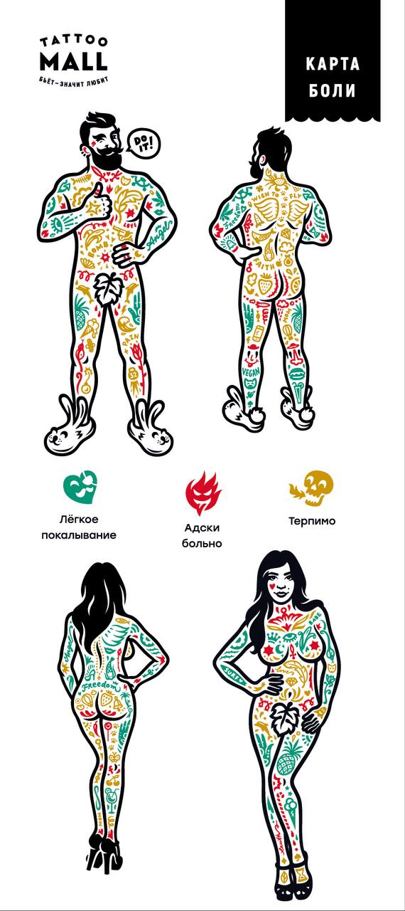

Внимательно прочитайте эту памятку!
Здесь я расскажу, что необходимо для проведения сеанса:
- Вам должно быть больше 18 лет (могу попросить паспорт).
- Мы должны заранее обговорить желаемый эскиз, идею, размер, цену и место татуировки.
- Точно подобрать дату и время вашего визита ко мне.
- Убедитесь,что у вас нет противопоказаний к тату:
Постоянные:
- Болезни плохой свертываемости крови (тромбоцитопения, фибринопения, гемофилия).
- Тяжелые вирусные заболевания (гепатит, ВИЧ, СПИД).
- Онкологические и острые воспалительные заболевания.
- Нарушение иммунитета.
- Психические расстройства и эпилепсия.
- Сахарный диабет 1 типа (инсулинозависимый) или тяжелое течение диабета 2 типа.
- Заболевания, связанные со значительным снижением иммунитета.
Временные:
- Склонность к резким нарушениям артериального давления, в частности к гипертонии.
- Воспалительные и аллергические заболевания кожи.
- Простудные заболевания и повышенная температура.
- Для женщин – период беременности, кормления грудью и во время менструации.
- Алкогольное и наркотическое опьянение.
- Не рекомендуется делать тату во время месячных.
-
Даже временные противопоказания важно учитывать перед тем, как посетить тату салон. Любое обострение хронического заболевания или воспалительный процесс (например, простуда) могут привести как минимум к тому, что ваша татуировка будет плохо заживать, да и качество работы окажется не лучшим (например, некоторые моменты влияют на яркость).
- До прихода на сеанс нужно покушать, и если сеанс длится больше 2х часов можно взять с собой легкий перекус (печенье, батончик, воду…)
Не приходите на сеанс голодным! Особенно будет полезно съесть что-нибудь сладкое, так как это увеличит уровень сахара в крови, тем самым снизит вероятность болезненности сеанса.
- Надевайте на сеанс удобную одежду и которую не жалко (может быть вероятность испачкать краской)
Если тату на ноге можно взять с собой шорты , для вашего и моего удобства.
- Не принимайте лекарства, разжижающие кровь (например, аспирин), так как вы увеличите вероятность кровотечения во время нанесения. Тату мастеру придется часто стирать выделения, при этом будет стираться трансферный рисунок и раздражаться кожный покров.
- Не утомляйтесь, нужно выспаться. Практика показывает, что усталость усиливает восприятие боли.
- За день до сеанса не создавайте физических нагрузок на место нанесения. Эти действия приводят в тонус не только мышцы, но и кожу. Она становится более упругой, что препятствует попаданию в нее достаточного количества пигмента. При этом покров быстрее травмируется и опухает.
- Кофе и кофеиносодержащие напитки тоже стоит исключить – за день до сеанса до минимума. Кофеин возбуждает нервную систему, что может повлиять на вашу способность чувствовать боль.
- Отложите сеанс, если заболели. Любое недомогание скажется на вашем болевом пороге.
- Приходите на сеанс трезвым. Принимать алкоголь не рекомендуется по причине риска повышения артериального давления (из-за сосудорасширяющих свойств этанола). Татуировка будет обильно кровоточить, что послужит помехой в работе, а пигмент не удержится в коже должным образом, следовательно, ваша татуировка будет не такой яркой как вам бы этого хотелось. За день до сеанса пить также не стоит. Боль будет чувствоваться гораздо сильнее.
- Если у вас остались вопросы, Вы всегда можете спросить у меня.
